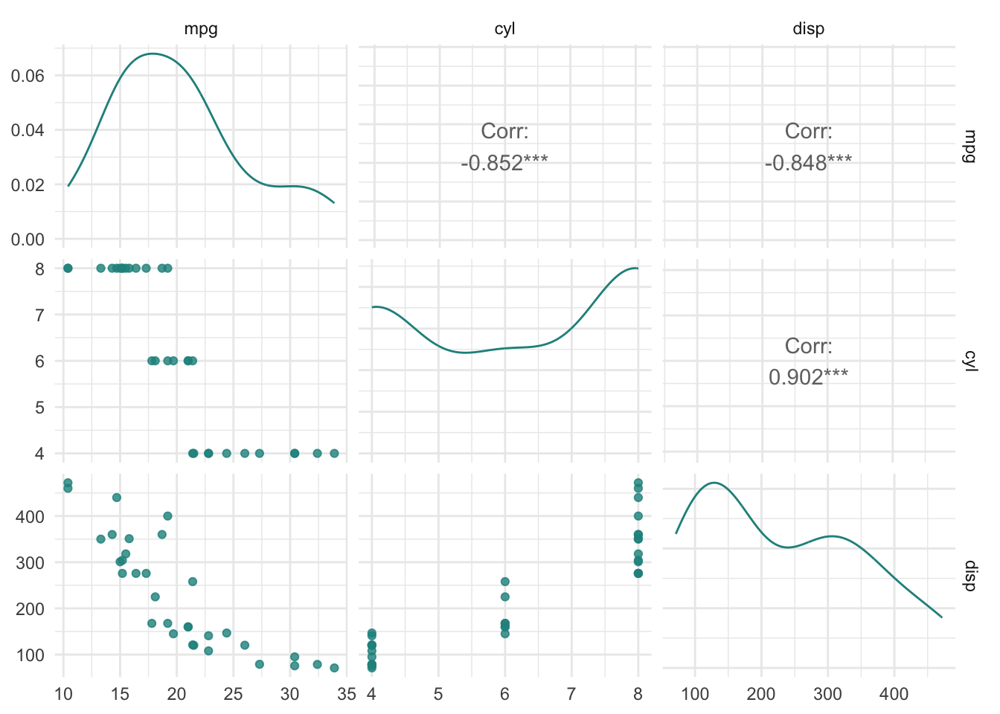
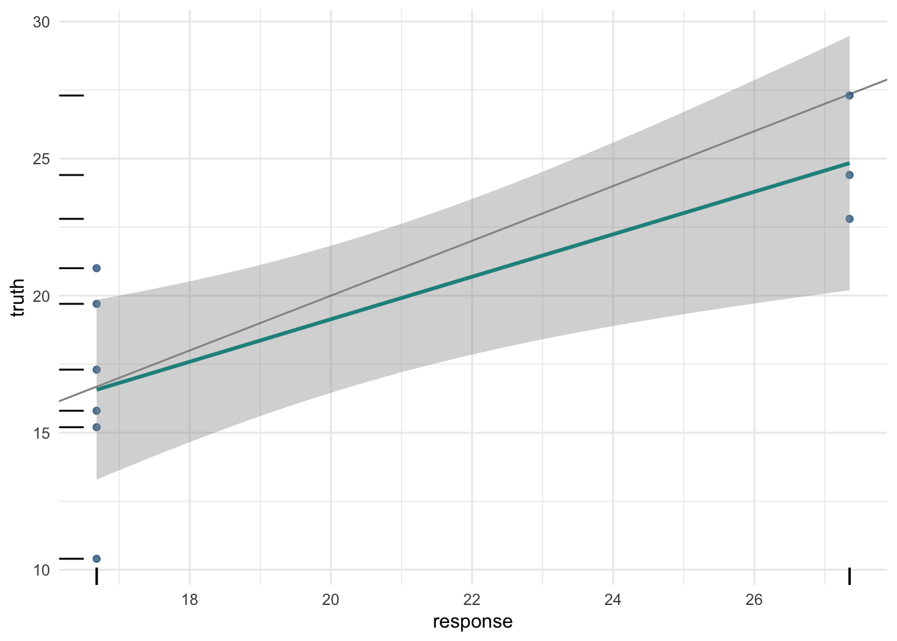
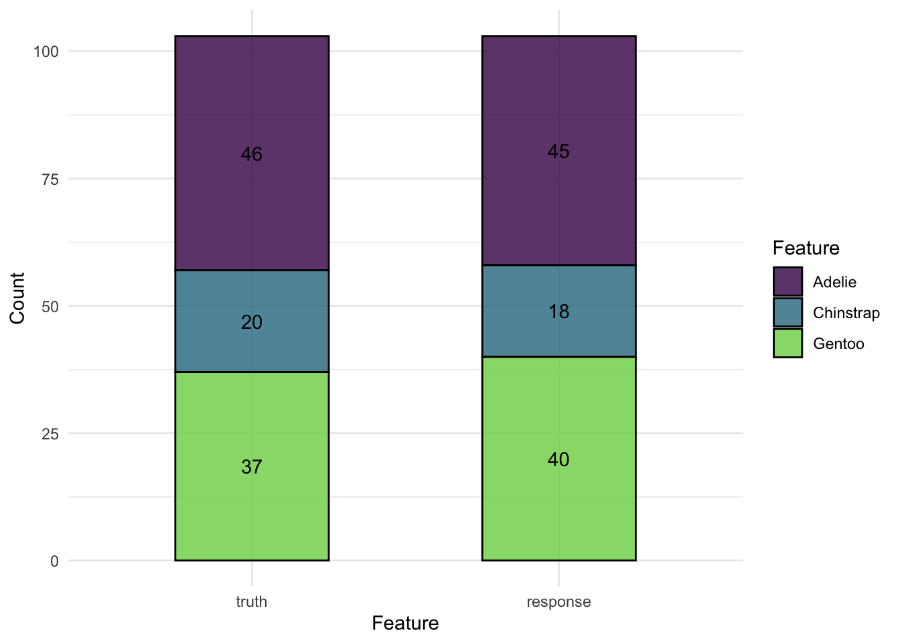
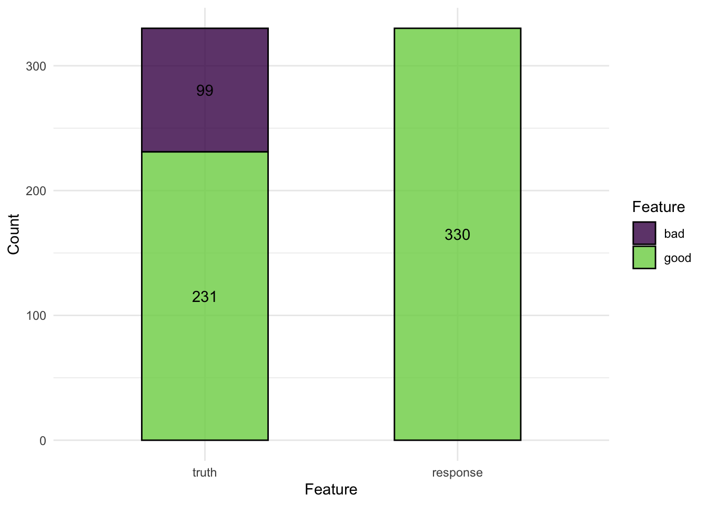
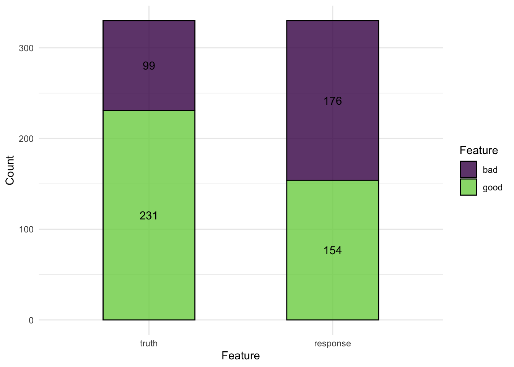

library(R6)
Foo = R6Class()
foo = Foo$new()
안내사항
Introduction
mlr3 (Machine Learning in R) 패키지와 생태계는 R 언어에서 분류 (classification), 회귀 (regression), 기타 머신러닝 작업들을 수행할 수 있도록 도와주는 포괄적, 객체 지향적(Object Oriented), 확장 가능한 프레임워크입니다.
mlr3 는 R의 caret, tidymodels, Python의 scikit-learn과 마찬가지로 여러 머신러닝 알고리즘들을 통합하여 하나의 통일된 인터페이스로 제공함으로써 머신러닝 작업을 더 적절하게 수행할 수 있게끔 도와주는 패키지입니다.
mlr3가 어떻게 작동하는지 빠르게 파악하고 싶으시다면, mlr3 cheatsheets을 살펴보시기 바랍니다.
mlr3verse는 mlr3의 생태계로써, 머신러닝을 위한 R 패키지들의 집합체로 이루어져 있습니다. mlr3 패키지에서는 머신러닝을 위한 기본적인 코드들을 제공하고, 추가적인 학습 알고리즘, 파라미터 튜닝, 피처 선택 등은 확장 패키지들을 통해 이용할 수 있습니다.

mlr3 생태계는 R의 R6와 data.table을 기반으로 만들어졌습니다. R6는 객체지향 (object orientation)을 위해, data.table은 데이터를 저장하고 작동시키기 위해 사용되었습니다.
mlr3의 원활한 사용을 위해, 두 패키지의 기초를 살펴보도록 합시다.
R6
R6는 객체지향 프로그래밍 (OOP)을 위한 R의 최근 패러다임 중 하나입니다. R6는 S3와 같이 R에 존재하던 기존의 객체지향성의 단점을 해결하는것이 특징입니다. 아마 다른 프로그래밍 언어에서 객체 지향 개념을 다루어 보셨다면, R6가 더 익숙하게 느껴질 것입니다.
R6에서 객체(object)는 R6Class() 생성자 객체와 더불어 $new()메소드를 통해 생성됩니다.
예를 들어 보겠습니다.
이 객체들은 자신들의 필드 안에서 변환 가능하도록 압축된 상태를 띄고 있는데, 우리는 이 객체들에 $ 기호를 통해 접근할 수 있습니다.
필드 뿐만 아니라, 객체들이 갖고 있는 메소드를 통해 각 객체의 상태를 파악하고 정보를 검색하거나, 객체의 내부 상태를 변경할 수 있습니다. 예를 들어 mlr3 의 학습모델(learner) 의 $train() 메소드를 통해, 모델을 학습된 상태로 변경할 수 있고, 이를 통해 예측을 할 수 있게 됩니다.
Note
R6 객체의 내부 요소는 다음과 같이 부릅니다.
$field: 필드, 정보$method(): 메소드, 특정 동작 실행
R6 객체들은 각각의 환경(environment)로서, 참조 특성 (reference semantics)을 갖습니다. 예를 들어, foo2 = foo 를 실행할 시, foo2 는 foo가 복사된 것은 아니지만, 하나의 객체를 참조하고 있는 것입니다. 따라서, foo$bar = 3 을 실행할 시, foo2$bar 역시 3이 됩니다.
객체를 복사할 경우 $clone() 메소드와 deep = TRUE 인자를 사용해야 합니다.
foo2 = foo$clone(deep=TRUE)library(mlr3verse)
Tip
R6에 대해 더 자세히 알고 싶다면, R6 vignettes, 특히 introduction부분을 참고하세요. 포괄적인 R6의 정보를 얻고 싶다면, Advanced R의 R6 챕터를 참고하세요.
mlr3의 필수 활용요소
Sugar functions
대부분의 mlr3 객체들은 sugar function으로 불리는 간편한 함수들을 제공합니다. 다시 말해, sugar function은 원래의 코드에 대한 단축키(shortcut)로서 사용자가 입력해야 하는 코드를 줄여줍니다. 예를 들어 lrn("regr.rpart") 는 LearnerRegrRpart$new() 의 sugar 버전입니다.
Dictionaries
mlr3는 러너(learners)나 태스크(tasks) 객체들을 저장하기 위해 dictionary 구조를 사용합니다. dictionary 구조는 key와 value로 이루어져 있어 key와 value를 연관시켜주는데, 이는 실제 사전의 단어와 단어의 설명과 같다고 이해하시면 됩니다.
dictionary는 연관된 객체들을 묶어 나열하고 검색하기 쉽게 하기 위해 사용됩니다. 예를 들어 특정 학습모델을 검색할 때, mlr_learners dictionary에 원하는 러너(key)를 입력하면 검색이 가능합니다.
예를 들면 다음과 같습니다.
require(mlr3)
mlr_learners$get('classif.rpart')<LearnerClassifRpart:classif.rpart>: Classification Tree
* Model: -
* Parameters: xval=0
* Packages: mlr3, rpart
* Predict Types: [response], prob
* Feature Types: logical, integer, numeric, factor, ordered
* Properties: importance, missings, multiclass, selected_features,
twoclass, weights또한 as.data.table(mlr3_learners) 모든 학습 모델의 정보를 확인할 수도 있습니다.
mlr3viz
mlr3viz는 mlr3 생태계 안에서 시각화를 담당하는 패키지입니다. ggplot2의 theme_minimal()을 적용시킨 동일한 배경의 그래프들을 생성합니다. mlr3viz는 ggplot2 를 기반으로 하고 있으며, fortify와 autoplot 라는 확장 패키지를 통해 예측, 학습모델, 벤치마크 객체 등 mlr3의 결과물들을 시각화하는 데 사용됩니다. mlr3viz에서 가장 많이 사용되는 것은 autoplot()으로, 객체의 타입에 따라 그래프의 출력 결과가 결정됩니다.
Data & Modeling
Tasks
태스크(task)는 일반적으로 테이블 형태의 데이터와 머신러닝 문제들을 정의한 메타데이터를 갖고 있는 객체입니다. 예를 들면 머신러닝의 분류에서 타겟 피처(feature)의 이름이 메타 데이터 입니다.
한마디로, 태스크는 우리가 활용하는 기본 데이터와 머신러닝을 위해 필요한 데이터들을 담아둔 정보 등이 포함된 객체입니다.
이 메타 데이터는 사용자가 모덜이 학습될 때 예측 타겟을 다시 지정해줄 필요 없도록 태스크와 함께 작동하게 됩니다.
용어 표현
Task와 Learner 등 영어로 지정된 단어들은 따로 번역하지 않고, 소리 그대로 “태스크”와 “러너”로 부르겠습니다.
내장 태스크
mlr3에는 mlr_tasks라고 하는 R6 Dictionary 를 통해 미리 지정된 머신러닝 태스크를 제공하고 있습니다.
mlr_tasks<DictionaryTask> with 20 stored values
Keys: bike_sharing, boston_housing, breast_cancer, german_credit, ilpd,
iris, kc_housing, moneyball, mtcars, optdigits, penguins,
penguins_simple, pima, ruspini, sonar, spam, titanic, usarrests,
wine, zoomlr_tasks에 내장된 태스크를 가져오기 위해선, tsk() 함수와 불러오고자 하는 태스크의 이름을 입력하면 됩니다.
task_mtcars = tsk("mtcars")
task_mtcars<TaskRegr:mtcars> (32 x 11): Motor Trends
* Target: mpg
* Properties: -
* Features (10):
- dbl (10): am, carb, cyl, disp, drat, gear, hp, qsec, vs, wt
도움말 보기
일반적으로 R에서 도움말을 보기 위해선 help()나 ?를 이용합니다. mlr3의 R6 클래스들도 마찬가지로 ?mlr_tasks_mtcars와 같이 ?을 이용해서 도움말을 찾아볼 수 있습니다. 뿐만 아니라 인스턴스의 task_mtcars$help()와 같이 $help() 메소드를 이용해, 도움말 페이지로 접근할 수 있습니다.
task_sonar = tsk('sonar')
split = partition(task_sonar, ratio=.7)외부 데이터 태스크로 변환
mlr3에서 제공하는 데이터가 아닌, 외부의 데이터셋을 mlr3 태스크로 활용하려면 아래와 같이 데이터셋을 태스크로 변환하는 작업이 필요합니다. 예를 들어, mtcars 데이터셋을 mlr3의 회귀 태스크로 직접 변환하고자 할 때, as_task_regr() 함수를 이용합니다.
library(survival)
library(data.table)
mtcars_subset = subset(mtcars, select = c("mpg", "cyl", "disp"))
str(mtcars_subset)'data.frame': 32 obs. of 3 variables:
$ mpg : num 21 21 22.8 21.4 18.7 18.1 14.3 24.4 22.8 19.2 ...
$ cyl : num 6 6 4 6 8 6 8 4 4 6 ...
$ disp: num 160 160 108 258 360 ...tsk_mtcars = as_task_regr(mtcars_subset, target="mpg", id="cars")태스크를 설정할 때, 반드시 target 인자를 지정해줌으로써 target 열을 지정합니다. id 인자는 선택사항으로, 특정 태스크에 이름을 부여하는 것입니다.
UTF8 열(column)이름
외부의 데이터를 태스크로 변환할 때, UTF8 이름을 따르지 않는 경우, 머신러닝 학습과정에서 오류가 발생합니다. 따라서 make.names() 함수를 이용해 데이터의 열 이름을 변경하는 것을 권장합니다.
library(mlr3viz)
autoplot(tsk_mtcars, type = "pairs")
데이터 살펴보기
태스크 객체는 테이블 형태의 데이터와 함께, 메타 데이터를 포함하고 있습니다. 예를 들면 행과 열의 개수, 피처(feature) 변수, 타겟 변수와 각 변수의 데이터유형 등을 확인할 수 있습니다.
이런 메타 데이터들은 각 객체의 field를 통해 확인이 가능합니다.
c(tsk_mtcars$nrow, tsk_mtcars$ncol)[1] 32 3피처와 타겟변수의 이름은 각각 $feature_names 와 $target_names 에 저장되어 있습니다. 여기서 target은 예측하고자 하는 변수를 의미합니다.
tsk_mtcars$feature_names[1] "cyl" "disp"tsk_mtcars$target_names[1] "mpg"한편 태스크 안에 들어있는 데이터는 data.table 객체로, $data() 메소드를 통해 확인할 수 있습니다.
tsk_mtcars$data()$data() 메소드 안에서 rows와 cols를 통해 원하는 데이터를 확인할 수 있습니다.
tsk_mtcars$data(rows=1:3, cols=tsk_mtcars$feature_names)태스크를 data.table 객체로 바꾼다면, R에서 사용되는 데이터프레임 관련 모든 함수들을 사용할 수 있습니다.
summary(as.data.table(tsk_mtcars)) mpg cyl disp
Min. :10.40 Min. :4.000 Min. : 71.1
1st Qu.:15.43 1st Qu.:4.000 1st Qu.:120.8
Median :19.20 Median :6.000 Median :196.3
Mean :20.09 Mean :6.188 Mean :230.7
3rd Qu.:22.80 3rd Qu.:8.000 3rd Qu.:326.0
Max. :33.90 Max. :8.000 Max. :472.0 태스크 변환자(Mutators)
머신러닝을 수행하며, 행과 열들을 선택하는 경우가 종종 있습니다. 예를 들면 훈련 데이터와 검증 데이터를 분리하기 위해 행을 선택하는 경우, 모델링에 넣을 피처들을 선택하는 경우가 있겠죠.
mlr3의 태스크는 행을 선택하는 $filter(), 열을 선택하는 $select() 를 이용해 원하는 조건의 데이터를 추출할 수 있습니다.
여기서 한 가지 주의해야 할 것이 있습니다. $select()와 $filter()는 변환자이기 때문에, 기존의 태스크 객체를 수정하게 됩니다. 다시 말해, 행이나 열을 선택하게 되면 처음의 태스크 객체도 변경된다는 것이죠.
task_iris = tsk("iris")
task_iris$select(c("Sepal.Length","Petal.Width"))
task_iris$filter(2:4)
task_iris$data()이를 방지하기 위해서는 $clone() 메소드를 이용해 새로운 태스크로 복사한 뒤에 행이나 열을 선택하는 작업하시면 됩니다.
task_iris_copy = task_iris$clone()
task_iris_copy$filter(2)
task_iris_copy$data()task_iris$data()task_iris_copy는 task_iris를 복사한 뒤, 2번째 행을 $filter() 했지만, task_iris의 데이터는 아무 변화가 없는 것을 확인할 수 있습니다.
Learner
러너 클래스는 널리 알려진 다양한 머신러닝 알고리즘들을 통일된 형태로 제공합니다. 태스크와 마찬가지로 mlr_learners dictionary를 통해 확인할 수 있습니다.
러너는 머신러닝 모델을 학습(train)하고 예측하는 역할을 수행합니다. 태스크와 마찬가지로, 러너의 sugar function인 lrn() 을 활용해 러너를 사용할 수 있습니다.
lrn("regr.rpart")<LearnerRegrRpart:regr.rpart>: Regression Tree
* Model: -
* Parameters: xval=0
* Packages: mlr3, rpart
* Predict Types: [response]
* Feature Types: logical, integer, numeric, factor, ordered
* Properties: importance, missings, selected_features, weights러너의 기본 형태는 Learner입니다. Learner로 시작하는 다양한 러너들이 존재합니다. mlr3의 러너들은 mlr3learners와 mlr3extralearners패키지를 통해 확인 가능합니다.
as.data.table(mlr_learners) |> head()
패키지 설치
mlr3의 러너를 실행하기 위한 패키지가 없다면 아래와 같은 경고 메시지가 뜹니다.
Warning: Package 'ranger' required but not installed for Learner 'classif.ranger이러한 에러는 패키지를 설치해주시면 간단히 해결됩니다.
install.packages("ranger")lrn_rpart = lrn('regr.rpart')
lrn_rpart<LearnerRegrRpart:regr.rpart>: Regression Tree
* Model: -
* Parameters: xval=0
* Packages: mlr3, rpart
* Predict Types: [response]
* Feature Types: logical, integer, numeric, factor, ordered
* Properties: importance, missings, selected_features, weights각 러너들은 아래의 메타데이터를 갖고 있습니다.
$feature_types: 피처들의 유형$packages: 모델을 학습시키고 예측하기 위해 필요한 패키지들$properties: 해당 러너가 갖고 있는 추가적인 특성. 예를 들어 importance 특성이 있다면 학습 후, 각 피처들의 importance를 추출할 수 있습니다.$predict_types: 해당 러너를 활용해 가능한 예측 유형입니다. 분류 유형의 러너는response와prob을 출력합니다.$param_set: 가능한 하이퍼파라미터 세트
모든 러너들은 두 단계에 걸쳐 진행됩니다.
학습 (Training):
$train()메소드를 통해 학습시키고자 하는 태스크를 학습합니다.예측 (Prediction):
$predict()메소드에 학습 때 사용하지 않은 데이터를 사용합니다. 학습 데이터를 기반으로 훈련된 모델이 새로운 데이터를 받아 예측값을 반환합니다.
예측 전 학습
러너가 학습되지 않았다면($train()이 실시되지 않았다면) $predict() 실행 시 에러가 발생합니다.
Train: 학습시키기
앞서 말했듯이, mlr3에서는 러너에 태스크를 투입하여 모델을 학습시킵니다. 머신러닝에서는 태스크를 투입하기 전, 훈련에 사용할 데이터와 예측에 사용할 데이터를 나누는 것이 일반적입니다.
mlr3 에서는 $partition() 메소드를 이용해 두 개의 데이터로 나눌 수 있습니다. 기본값(default)은 전체 데이터의 67%를 훈련에, 나머지 33%를 예측에 사용합니다. 물론 이 비율은 ratio 인자 (범위: 0~1)를 통해 변경 가능합니다.
splits = partition(tsk_mtcars, ratio = 0.7)
splits$train
[1] 1 4 5 9 10 21 25 27 32 6 7 11 12 15 17 22 23 24 31 18 19 20 28
$test
[1] 2 3 8 30 13 14 16 29 26데이터를 나누었으니, 이제 모델을 학습시켜보도록 하겠습니다. 위에서 선언한 rpart 러너에서 $train() 메소드를 실행시킵니다. 태스크와 row_ids에는 splits 중 train에 해당하는 부분을 입력합니다.
lrn_rpart$train(tsk_mtcars, row_ids = splits$train)
lrn_rpart$modeln= 23
node), split, n, deviance, yval
* denotes terminal node
1) root 23 901.0783 20.3913
2) cyl>=5 15 127.9240 16.6800 *
3) cyl< 5 8 179.1600 27.3500 *학습을 시킨 이후, $model 필드를 통해 학습된 결과를 확인할 수 있습니다.
Predict: 예측하기
모델 학습이 완료되었다면, 예측값을 만들어볼 수 있습니다. splits의 test 행을 이용해 $predict() 메소드를 실행합니다.
prediction = lrn_rpart$predict(tsk_mtcars,row_ids = splits$test)
prediction<PredictionRegr> for 9 observations:
row_ids truth response
2 21.0 16.68
3 22.8 27.35
8 24.4 27.35
---
16 10.4 16.68
29 15.8 16.68
26 27.3 27.35row_ids 는 예측 데이터의 행의 번호와 동일합니다. truth는 태스크에 저장되어 있는 테스트 데이터의 실제값을 의미하고 response는 학습시킨 모델이 예측한 값을 의미합니다. 각각의 열은 Prediction 객체의 필드를 통해 확인할 수 있습니다.
prediction$response[1] 16.68 27.35 27.35 16.68 16.68 16.68 16.68 16.68 27.35mlr3viz를 이용해 Prediction 객체를 시각화할 수 있습니다.
autoplot(prediction)
만약 splits로 나눈 데이터가 아니라 데이터프레임 형태로 된 새로운 데이터를 활용해 예측값을 만들고 싶다면, $predict_newdata()를 사용하면 됩니다.
mtcars_new = data.table(
cyl = c(5, 6), disp = c(100, 120),
hp = c(100, 150), drat = c(4, 3.9), wt = c(3.8, 4.1),
qsec = c(18, 19.5), vs = c(1, 0), am = c(1, 1),
gear = c(6, 4), carb = c(3, 5)
)
prediction = lrn_rpart$predict_newdata(mtcars_new)
prediction<PredictionRegr> for 2 observations:
row_ids truth response
1 NA 16.68
2 NA 16.68물론 새로 생성한 mtcars_new 데이터는 실제 값이 제공되지 않았기 때문에, Prediction 객체의 truth는 NA로 출력됩니다.
일반적으로 회귀 모델에서는 타겟의 값을 예측하지만, 일부 회귀 모델은 표준 오차(standard error, SE) 또한 예측할 수 있습니다. 이를 위해서는 $predict_type 필드가 기본값인 response 에서 se로 변경되어야 합니다. 위에서 다루었던 의사결정나무(regr.rpart) 모델은 표준오차 설정이 불가능하기 때문에, 선형 회귀모형으로 예시를 들어보겠습니다.
lrn_lm = lrn("regr.lm", predict_type = "se")
lrn_lm$train(tsk_mtcars, splits$train)
lrn_lm$predict(tsk_mtcars, splits$test)<PredictionRegr> for 9 observations:
row_ids truth response se
2 21.0 22.11158 1.192766
3 22.8 26.64815 1.167893
8 24.4 25.90958 1.393723
---
16 10.4 12.84206 1.940138
29 15.8 14.92227 1.042515
26 27.3 27.20160 1.172699Hyperparameters
각 러너들은 학습에 영향을 미치는 하이퍼파라미터들을 설정해줄 수 있습니다. 하이퍼라미터를 통해 모델이 어떻게 학습되는지, 또는 어떻게 예측값을 생성할지 등을 조정해줄 수 있습니다.
Paradox, Parameter Sets
위의 예시에서 사용하던 의사결정나무 하이퍼파라미터에 접근해보겠습니다.
lrn_rpart$param_set<ParamSet>
id class lower upper nlevels
<char> <char> <num> <num> <num>
1: cp ParamDbl 0 1 Inf
2: keep_model ParamLgl NA NA 2
3: maxcompete ParamInt 0 Inf Inf
4: maxdepth ParamInt 1 30 30
5: maxsurrogate ParamInt 0 Inf Inf
6: minbucket ParamInt 1 Inf Inf
7: minsplit ParamInt 1 Inf Inf
8: surrogatestyle ParamInt 0 1 2
9: usesurrogate ParamInt 0 2 3
10: xval ParamInt 0 Inf Inf
default
<list>
1: 0.01
2: FALSE
3: 4
4: 30
5: 5
6: <NoDefault>\n Public:\n clone: function (deep = FALSE) \n initialize: function ()
7: 20
8: 0
9: 2
10: 10
value
<list>
1:
2:
3:
4:
5:
6:
7:
8:
9:
10: 0위의 결과는 paradox::ParamSet 객체입니다. 이 객체는 하이퍼파라미터의 이름(id), 데이터 유형(class), 하이퍼파라미터의 범위(lower, upper), 범주형일 경우의 범주의 수(nlevels), 초기값(default), 그리고 최종적으로 설정된 값(value) 에 대한 정보를 담고 있습니다.
아래의 표는 사용가능한 하이퍼파라미터 유형들에 대한 표입니다.
| Hyperparameter Class | Description |
|---|---|
ParamDbl |
Real-valued (Numeric) Parameters |
ParamInt |
Integer Parameters |
ParamFct |
Categorical (Factor) Parameters |
ParamLgl |
Logical / Boolean Parameters |
ParamUty |
Untyped Parameters |
의사결정나무 예시에서, ParamSet을 바탕으로 다음의 내용을 추론할 수 있습니다.
cp는 반드시 0 (lower)과 1 (upper) 사이의 범위를 갖는 double (ParamDbl) 형태의 변수여야 하고, 초기값은 0.01 (default)keep_model은 반드시TRUE나FALSE값을 갖는 logical (ParamLgl) 형태의 값이어야 함xval은 0과 무한대(Inf) 범위를 갖는 정수(ParamInt)여야 하고, 초기값 10을 가지며, 현재 값이 0으로 설정되어 있음
하이퍼파리미터 확인 및 설정
위와 같이 하이퍼 파라미터에 접근한 뒤, 기존의 값을 원하는 값으로 변경하거나, 새로운 하이퍼파라미터에 값을 설정해줄 수 있습니다.
lrn_rpart$param_set$values$cp = 0.2
lrn_rpart$param_set$values$xval
[1] 0
$cp
[1] 0.2변경된 파라미터가 적용된 것을 확인할 수 있습니다.
하이퍼파라미터 최적화
하이퍼 파라미터에 대한 자세한 설명은 mlr3 하이퍼파라미터 최적화 포스트에서 더 자세히 다루도록 하겠습니다.
Evaluation: 평가
아마 머신러닝 모델링 과정에서 가장 중요한 단계가 바로 모델의 성능 평가일 것입니다. 평가를 하지 않는다면 아무리 잘 만든 모델이라도 그 성능을 알 수 없기 때문이죠. 평가에서는 앞서 만든 객체들을 바탕으로 모델의 성능을 평가해보도록 하겠습니다.
lrn_rpart = lrn("regr.rpart")
tsk_mtcars = tsk("mtcars")
splits = partition(tsk_mtcars)
lrn_rpart$train(tsk_mtcars, splits$train)
prediction = lrn_rpart$predict(tsk_mtcars, splits$test)Measures
예측값이 잘 예측되었는지는 데이터의 실제값과 머신러닝 모델이 예측한 예측값의 비교를 통해 평가됩니다. 태스크와 러너와 비슷하게, mlr3에서는 측정기준들이 mlr_measures라고 불리는 딕셔너리에 저장되어 있습니다. 이는 msr()로 사용 가능합니다.
as.data.table(msr())mlr3에서 시행되는 모든 측정값은 다음의 세 가지 요소에 의해 정의되어있습니다. 예를 들어 mean absolute error(MAE)를 사용한다고 가정해보죠.
measure = msr("regr.mae")
measure<MeasureRegrSimple:regr.mae>: Mean Absolute Error
* Packages: mlr3, mlr3measures
* Range: [0, Inf]
* Minimize: TRUE
* Average: macro
* Parameters: list()
* Properties: -
* Predict type: response예측값 점수 매기기
모델의 성능을 계산하기 위해서는 prediction 객체의 $score() 메소드를 이용합니다. 이 때 $score() 메소드에는 평가하고자 하는 측정기준을 넣어줍니다.
prediction$score(measure)regr.mae
2.42987 앞서 살펴보았던 msr() 함수는 하나의 성능 지표만 불러오는 함수였습니다. 여러 개의 성능을 동시에 확인하기 위해서는 msrs()를 이용하면 됩니다.
measures = msrs(c("regr.mse","regr.mae"))
prediction$score(measures)regr.mse regr.mae
9.565807 2.429870
기타 측정값들
mlr3에서는 모델의 예측 성능 뿐만 아니라, 모델에 대한 메타정보 또한 측정할 수 있습니다. 예를 들어
msr("time_train"): 모델을 학습시키는 데 걸린 시간msr("time_predict"): 모델로 예측하는 데 걸린 시간msr("time_both"): 훈련 및 예측하는 데 걸린 시간msr("selected_features"): 선택된 피처의 수 (모델에selected_features속성 있어야 사용 가능)
measures = msrs(c("time_train", "time_predict", "time_both"))
prediction$score(measures, learner = lrn_rpart) time_train time_predict time_both
0.002 0.001 0.003 분류(Classification)
분류 알고리즘은 연속적인 숫자를 예측하는 것이 아닌, 이산형(discrete), 범주형(categorical)한 값을 예측할 때 사용됩니다. 예를 들어 펭귄의 신체적인 특징을 바탕으로 어떤 종인지 분류하고자 할 때 분류 알고리즘을 사용할 수 있습니다.
분류 역시 앞서 다루었던 회귀와 동일한 흐름으로 태스크, 러너를 활용한 예측, 성능 측정을 하게 됩니다. mlr3의 분류에 사용되는 코드의 특징들을 살펴보겠습니다.
분류 모델 만들기
위에서 언급한 것처럼, 분류와 회귀 모델을 만들 때에는 태스크, 러너, 측정이 모두 동일합니다. 다만 분류이기 때문에 TaskClassif, LearnerClassif, MeasureClassif 등의 객체가 각각 사용됩니다.
간단하게 펭귄을 분류하는 모델을 하나 만들어보겠습니다.
set.seed(2023)
tsk_penguins = tsk("penguins")
splits = partition(tsk_penguins, ratio=.7)
# modeling
lrn_featureless = lrn("classif.featureless")
lrn_rpart = lrn("classif.rpart", cp=.2, maxdepth=5)
measure = msr("classif.acc")
# train learners
lrn_featureless$train(tsk_penguins, splits$train)
lrn_rpart$train(tsk_penguins, splits$train)
# evaluation
lrn_featureless$predict(tsk_penguins, splits$test)$score(measure)classif.acc
0.4466019 lrn_rpart$predict(tsk_penguins, splits$test)$score(measure)classif.acc
0.9417476 위의 사례에서 palmerpenguins 패키지에 있는 penguins 데이터셋을 활용하여 분류모델을 만들었습니다. 그 다음 featureless 모델(가장 기본적인 값으로)과 의사결정나무 모형으로 학습시킨 뒤, 예측 성능을 정확도(accuracy)로 측정하였습니다. 그 결과 기본 모형에 비해 의사결정 나무의 정확도가 훨씬 높게 나타났습니다.
TaskClassif
분류 태스크는 회귀 태스크와 거의 유사합니다. 다만 타겟 변수가 범주형으로 되어있다는 것이 둘의 가장 큰 차이점입니다.
mlr3에 포함되어있는 분류 태스크들을 보면 다음과 같습니다.
as.data.table(mlr_tasks)[task_type=="classif"]물론 as_task_classif()를 통해 외부 데이터셋으로 자신만의 분류 태스크를 만들 수도 있습니다.
as_task_classif(palmerpenguins::penguins, target="species")<TaskClassif:palmerpenguins::penguins> (344 x 8)
* Target: species
* Properties: multiclass
* Features (7):
- int (3): body_mass_g, flipper_length_mm, year
- dbl (2): bill_depth_mm, bill_length_mm
- fct (2): island, sexmlr3에는 두 가지의 분류 태스크가 있습니다. 하나는 binary 분류로, 타겟 변수가 두 가지의 범주를 갖게 됩니다. 다른 하나는 타겟 변수가 세 개 이상의 범주를 갖는 multiclass 분류입니다.
예를 들어 sonar 태스크는 타겟이 두 가지의 범주를 갖기 때문에 binary 분류입니다. 태스크의 속성(Properties)이 twoclass인 것을 확인할 수 있습니다.
tsk_sonar = tsk("sonar")
tsk_sonar<TaskClassif:sonar> (208 x 61): Sonar: Mines vs. Rocks
* Target: Class
* Properties: twoclass
* Features (60):
- dbl (60): V1, V10, V11, V12, V13, V14, V15, V16, V17, V18, V19, V2,
V20, V21, V22, V23, V24, V25, V26, V27, V28, V29, V3, V30, V31,
V32, V33, V34, V35, V36, V37, V38, V39, V4, V40, V41, V42, V43,
V44, V45, V46, V47, V48, V49, V5, V50, V51, V52, V53, V54, V55,
V56, V57, V58, V59, V6, V60, V7, V8, V9tsk_sonar$class_names[1] "M" "R"반면에 tsk(penguins)는 타겟의 범주가 세 개인 multiclass 분류 태스크입니다.
tsk_penguins<TaskClassif:penguins> (344 x 8): Palmer Penguins
* Target: species
* Properties: multiclass
* Features (7):
- int (3): body_mass, flipper_length, year
- dbl (2): bill_depth, bill_length
- fct (2): island, sextsk_penguins$class_names[1] "Adelie" "Chinstrap" "Gentoo" binary 태스크와 multiclass 태스크의 유일한 차이점은 $positive 필드의 존재 여부입니다. binary 태스크의 경우 예측 가능한 값이 두 가지밖에 없습니다. 따라서 어떤 값을 positive 또는 양성으로 예측할지를 지정해주어야 합니다. 나머지는 자동으로 negative 또는 음성으로 분류하게 됩니다. 만약 positive 클래스가 지정되지 않는다면, mlr3에서는 타겟 변수의 첫 번째 레벨(범주)를 positive로 간주하고 분류를 진행합니다. 이는 잘못된 예측을 하게 만드는 것이므로, 반드시 $positive를 지정해주어야 합니다.
LearnerClassif 와 MeasureClassif
LeanerClassif에 내장된 분류 러너들은 회귀 러너들과 동일한 형태를 갖고 있습니다. 가장 큰 차이점은 분류 러너의 경우 예측 형태가 예측값의 클래스를 예측하는 response 이외에 예측값의 클래스에 속할 확률을 예측하는 prob도 존재한다는 것입니다.
lrn_rpart = lrn("classif.rpart", predict_type = "prob")
lrn_rpart$train(tsk_penguins, splits$train)
prediction = lrn_rpart$predict(tsk_penguins, splits$test)
prediction<PredictionClassif> for 103 observations:
row_ids truth response prob.Adelie prob.Chinstrap prob.Gentoo
1 Adelie Adelie 0.98979592 0.01020408 0.0000000
6 Adelie Adelie 0.98979592 0.01020408 0.0000000
7 Adelie Adelie 0.98979592 0.01020408 0.0000000
---
334 Chinstrap Chinstrap 0.04347826 0.95652174 0.0000000
339 Chinstrap Chinstrap 0.04347826 0.95652174 0.0000000
343 Chinstrap Gentoo 0.01111111 0.03333333 0.9555556위의 예에서 알 수 있듯이 response에서는 prob에서 확인할 수 있는 예측확률이 가장 높게 나온 범주를 기준으로 예측한 클래스의 값이 나오게 됩니다.
분류 측정값도 러너와 마찬가지로 회귀의 것과 생김새는 동일하지만, predict_type에 따라 다른 예측성능을 측정할 수 있습니다.
as.data.table(msr())[
task_type == "classif" & predict_type == "prob" &
task_properties != "twoclass"]펭귄의 종을 예측하는 multiclass 분류 모델의 성능을 예측해보면 다음과 같습니다.
measures = msrs(c("classif.mbrier", "classif.logloss", "classif.acc"))
prediction$score(measures) classif.mbrier classif.logloss classif.acc
0.05733419 0.14250164 0.97087379 PredictionClassif, Confusion Matrix, Thresholding
PredictionClassif 객체는 회귀의 예측에는 없는 두 개의 중요한 요소가 있습니다. 첫 번째는 $confusion 필드이고, 두 번째는 $set_threshold() 메소드입니다.
Confusion matrix
혼동 행렬은 모델이 예측한 값이 잘 분류되었는지 실제 데이터와 비교하여 만들어지는 빈도 표입니다. mlr3에서는 $confusion 필드를 활용해 혼동행렬을 생성할 수 있습니다.
prediction$confusion truth
response Adelie Chinstrap Gentoo
Adelie 45 0 0
Chinstrap 0 18 0
Gentoo 1 2 37가로 방향으로 읽는 truth는 실제 데이터의 값을, response는 분류 모델이 예측한 값을 의미합니다. 대각선의 값들 (45, 18, 37)은 올바르게 예측한 값의 수이고, 나머지 값들은 잘못 예측(분류)한 값을 의미합니다.
또한 autoplot()을 이용해 혼동행렬을 시각화할 수 있습니다.
autoplot(prediction)
binary 분류는 혼동행렬에서 좌측 상단(31)은 True positive, 우측 하단(25)는 True negative입니다. 우측 상단(7)과 좌측 하단(6)은 각각 False positive와 False negative입니다.
set.seed(2023)
splits = partition(tsk_sonar)
lrn_rpart$
train(tsk_sonar, splits$train)$
predict(tsk_sonar, splits$test)$
confusion truth
response M R
M 31 7
R 6 25혼동행렬에서 계산되는 다양한 binary 분류의 성능들은 mlr3 리샘플링에서 다루도록 하겠습니다.
Thresholding
binary 분류 모델의 중요한 요소는 바로 positive와 negative를 분류하는 기준인 threshold 를 설정하는 것입니다. multiclass 분류에서 response 값은 여러 개의 범주 중 가장 높은 확률로 예측된 범주였지만, binary 분류에서는 positive로 예측할 확률이 50% 이상이어야 positive로 분류될 수 있습니다.
이처럼 threshold는 일반적으로 50%로 알려져 있습니다. 하지만 이 threshold는 예측하고자 하는 범주(클래스)의 불균형이 있는 경우 변경하여 사용할 수 있습니다.
예를 들어 german_credit 태스크를 살펴보겠습니다. 1000명의 데이터 중에서 700명은 신용이 좋은 경우이고, 나머지 300명은 신용이 나쁜 경우입니다. 이 데이터를 활용해, 모든 사람이 좋은 신용을 가질 것이라고 예측함으로써 70%의 정확도를 보이는 예측 모델을 만들 수 있습니다.
task_credit = tsk("german_credit")
lrn_featureless = lrn("classif.featureless", predict_type = "prob")
split = partition(task_credit)
lrn_featureless$train(task_credit, split$train)
prediction = lrn_featureless$predict(task_credit, split$test)
prediction$score(msr("classif.acc"))classif.acc
0.7 autoplot(prediction)
언뜻 보기에는 모델의 성능이 좋아보이지만, 사실 이 경우는 신용이 나쁜 사람들을 모두 무시해버린 경우입니다. 이는 헬스케어 등과 같은 분야에서 큰 문제를 야기할 수 있습니다.
Thresholding은 클래스들이 다른 확률로 설정되어 예측될 수 있게끔 해줍니다. 따라서 50%를 기준으로 신용의 좋고 나쁨을 예측하는 것이 아니라, 데이터에 맞게 70% 미만을 기준으로 분류를 할 수 있습니다.
prediction$set_threshold(0.7)
prediction$score(msr("classif.acc"))classif.acc
0.5242424 autoplot(prediction)
threshold를 설정하지 않았을 때보다 성능(정확도)은 나빠졌지만, 클래스 간의 관계(신용의 좋고 나쁨 간 비율)를 더욱 정확히 반영하고 있기 때문에 더 좋은 모델이라고 할 수 있습니다.
지원되는 러너 알고리즘
mlr3에서는 다양한 알고리즘들을 사용할 수 있습니다. mlr3에서 사용할 수 있는 러너들은 기본적으로 mlr3 이외에도 mlr3learners, mlr3extralearners 패키지를 통해 확인 가능합니다.
이러한 러너들은 mlr_learners 딕셔너리를 통해 확인 가능합니다.
learners_dt = as.data.table(mlr_learners)
learners_dt또한 해당 러너의 딕셔너리에서 특정 조건을 만족하는 값들만 선택하여 확인할 수 있습니다.
learners_dt[task_type == "regr" &
sapply(predict_types, function(x) "se" %in% x)]결론
이번 챕터에서는 mlr3를 활용해 머신러닝 알고리즘을 다루는 방법에 대해 살펴보았습니다. 태스크를 이용해 학습시키고자 하는 데이터를 만들고, 러너를 이용해 모델을 학습시킨 후, 예측하였습니다. 또한 Measure 클래스를 이용해 모델이 예측한 값을 바탕으로 모델의 성능을 계산할 수 있었습니다.
이번 챕터에서 가장 중요한 내용들을 표로 요약하면 아래와 같습니다.
| Class | Constructor/function | Fields/Methods |
|---|---|---|
Task |
tsk()/as_task_X() |
$filter(); $data() |
Learner |
lrn()/lrns() |
$train(); $predict() |
Prediction |
learner$predict() |
$score(); |
Measure |
msr()/msrs() |